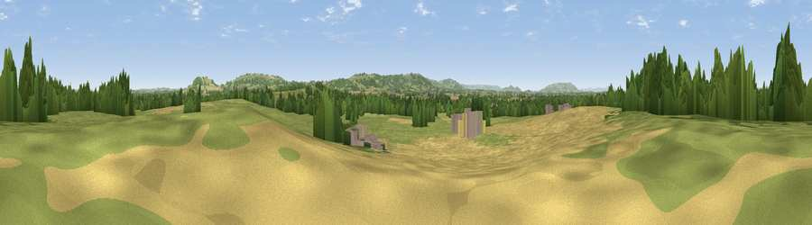

Bayliss Hill
#24852 in England · top 55% of its area beats it · near HoneybourneThe view, rendered

A 360° render of this exact spot computed from the terrain model, tree cover and land cover — summer colours, afternoon light, calibrated against photographs of famous viewpoints. Real trees, hedges and buildings will differ in detail.
The panorama
Grey silhouette: terrain skyline in each direction (720 bearings, Earth curvature and refraction included). Dashed green: skyline with trees (+15 m) and buildings (+8 m) as obstacles. Blue strip: how far the ground is visible on each bearing.
Where the view opens
Wedge length = distance to the farthest visible ground on that bearing (vegetation-aware). Rings at 10, 25 and 50 km.
What fills the view
49% grassland · 29% cropland · 18% woodland · 4% built-up
Angular shares of the visible panorama (visual magnitude), not map area. Landscape diversity 0.49 (0–1 Shannon).
Key numbers
More beautiful places nearby
The staircase of upgrades: each row has a higher view potential than everything closer. Driving times are estimates from straight-line distance, calibrated against real road routing — check an actual route before setting out.
| Place | Direction | Drive | Score |
|---|---|---|---|
| Viewpoint near Honeybourne | WNW · 1 km | ~4 min | 50.3 |
| Viewpoint near Weston-sub-Edge | SSE · 5 km | ~11 min | 64.8 |
| Viewpoint near Chipping Campden | SSE · 5 km | ~11 min | 76.3 |
| Viewpoint near Meon Vale | E · 5 km | ~11 min | 77.0 |
| Broadway Hill | S · 9 km | ~18 min | 77.7 |
| Viewpoint near Elmley Castle | WSW · 16 km | ~28 min | 80.5 |
| Bredon Hill | WSW · 17 km | ~30 min | 83.0 |
| North Hill | W · 35 km | ~54 min | 86.8 |
52.10583, -1.82220 · source: osm peak · position refined by local search. Computed location — check access rights before visiting.